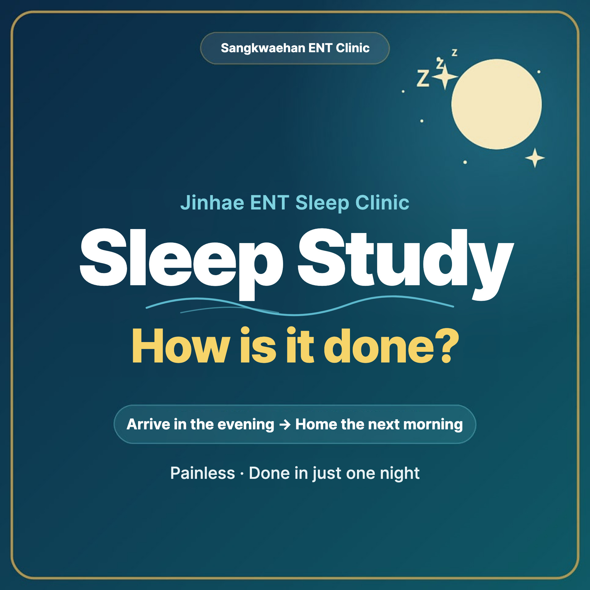
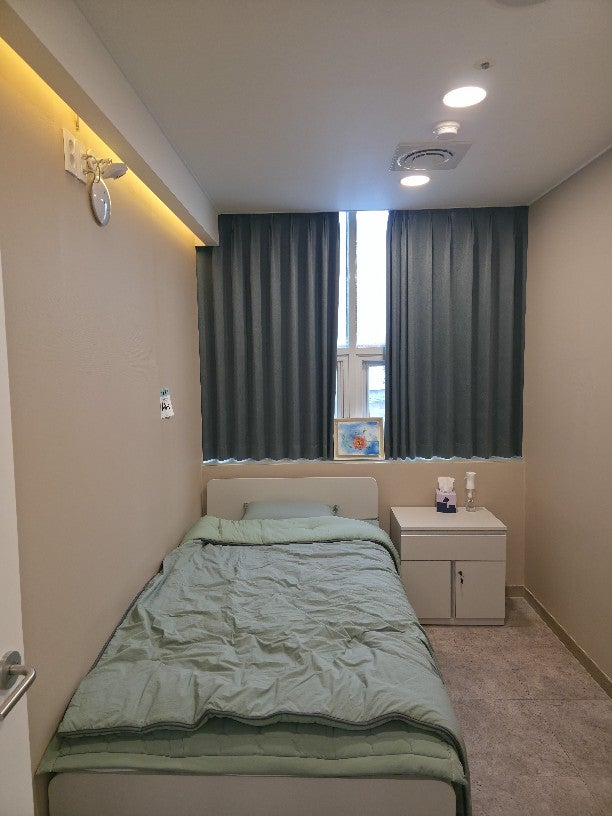
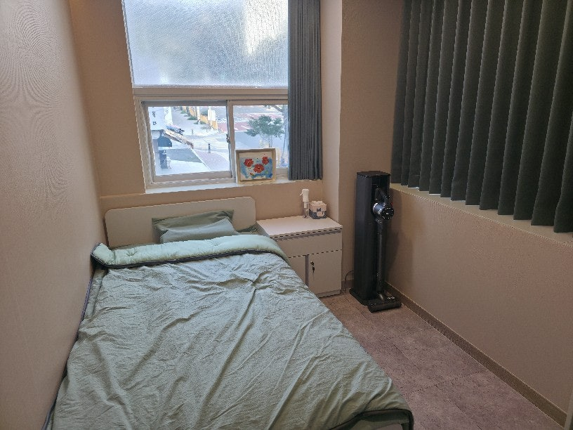
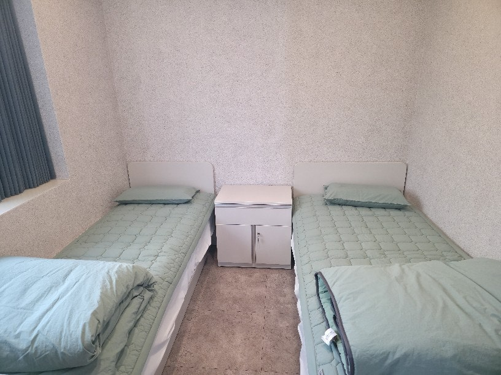
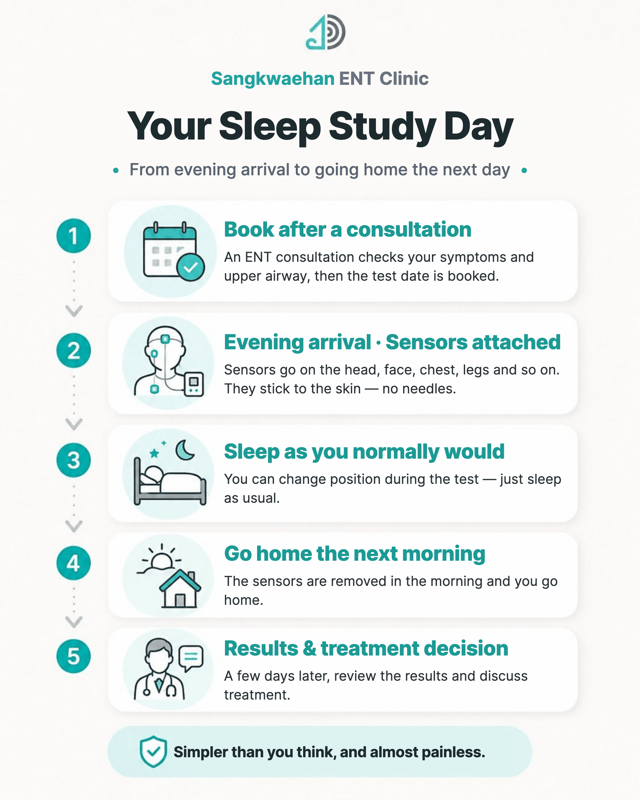
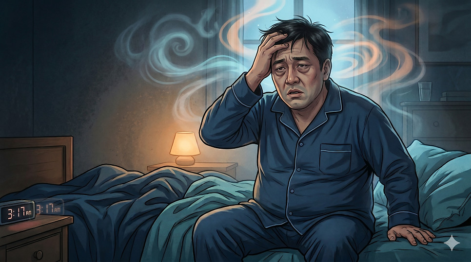

Many people look into a sleep study because of snoring, being told they stop breathing in their sleep, or daytime sleepiness. A sleep study (polysomnography) is the standard test for objectively confirming sleep apnea, and whether it is covered by health insurance depends on your symptoms and examination findings. Here's who should consider one, what happens, how to prepare, insurance basics, and what treatment may follow.
In this article 7 sections · 6 min read
Who should consider a sleep study?
It's worth considering if any of these apply:
- You snore heavily, or someone has told you that you stop breathing in your sleep
- You feel sleepy and tired during the day despite enough sleep
- You wake with a heavy head, or wake up often during the night
- You have high blood pressure, diabetes or an irregular heartbeat along with snoring
- Your snoring has got worse as you've gained weight
Especially if pauses in breathing have been witnessed or you are sleepy during the day, it may be sleep apnea rather than simple snoring, and objective testing is needed.
What is a sleep study?
Polysomnography records many body signals at once during a night's sleep: brain waves, eye movements, muscle activity, heart rhythm (ECG), breathing, oxygen saturation, snoring and sleeping position. It measures how you actually sleep in numbers — a kind of comprehensive health check for sleep. The key is that sleep quality and breathing are assessed with data, not impressions.
- Brain waves, eye movements, chin muscle activity — sleep stages, the share of deep and dream sleep, and whether sleep architecture is normal
- Airflow, chest and abdominal movement, oxygen saturation — apneas, hypopneas and how far oxygen drops
- ECG — heart rate changes and arrhythmias during sleep
- Leg muscle activity — repeated leg movements during sleep
- Snoring sensor and body position — which positions make snoring and breathing problems worse



On the day: from evening arrival to going home the next morning
It's simpler than most people expect, and almost painless.

- Consultation and booking: an ENT consultation first checks your symptoms and upper airway, and the test night is booked.
- Evening arrival and sensors: on the test day you come to the clinic in the evening, and sensors are attached to your head, face, chest and legs. Nothing is inserted with needles — sensors are stuck to the skin.
- Sleep as usual: you can change position during the test, so there's no need to worry.
- Home the next morning: the sensors are removed and you go home.
- Results consultation: a few days later, the doctor goes through the results with you and discusses treatment.
How to prepare
A little preparation helps get more accurate results.
- From the afternoon of the test, avoid caffeine (coffee, green tea, cola, chocolate), and avoid napping and heavy smoking just before the test.
- Avoid heavy drinking the day before and on the day, as alcohol affects sleep structure and breathing.
- Don't stop your regular medicines (e.g. for blood pressure or diabetes) on your own. Tell us in advance about sleeping pills, sedatives or antidepressants, which may affect sleep.
- Eat dinner as usual, but avoid a very large meal or an empty stomach just before the test.
- Wash your hair beforehand so the sensors stick well, and avoid hair products, heavy makeup, body lotion and oils.
- Remove dark nail polish, gel nails or acrylic nails if possible for the finger oxygen sensor. If you can't, keep at least one finger clean for the sensor.
- Bring comfortable sleepwear, toiletries and a change of clothes for the night.
- There's no need to sleep less beforehand or change your usual habits. Come in your usual condition.
How is the result (AHI) interpreted?
The most important number is the apnea–hypopnea index (AHI): how many times per hour of sleep your breathing stopped (apnea) or became shallow (hypopnea). It's usually classified as:
| Severity | AHI (events per hour) |
|---|---|
| Normal | Under 5 |
| Mild | 5 to under 15 |
| Moderate | 15 to under 30 |
| Severe | 30 or more |
Adult AHI categories: under 5; mild, 5 to under 15; moderate, 15 to under 30; severe, 30 or more events per hour. Different criteria apply to children.
"AHI 15" may not mean much on its own, so let's put it in everyday terms.

An AHI of 15 means breathing stopped or became shallow 15 times an hour — about once every 4 minutes. An AHI of 15 corresponds to about 105 scored breathing events over seven hours of actual sleep. Some events are associated with oxygen drops, some with brief EEG arousals, and some with both. The oxygen and arousal measurements show their actual impact. These events can fragment sleep, but AHI alone does not tell us how much deep sleep you obtained. Fragmented sleep can help explain why you don't feel refreshed however long you stay in bed, and why you feel sleepy, heavy-headed and unable to concentrate during the day. Many people find that their results finally explain symptoms they have had for a long time.
In severe cases (AHI 30 or more), breathing is interrupted on average once every 2 minutes — more than 200 times over 7 hours. As oxygen drops and you repeatedly half-wake all night, strain also builds up on the heart and blood pressure.
AHI is considered together with sleep efficiency, oxygen changes and other measures to judge how severe sleep apnea is and decide on treatment. For a detailed guide, see how to read your sleep study report.
How is treatment decided?
Lifestyle measures can help in mild OSA, but PAP or an oral appliance may also be appropriate when symptoms, comorbidities or patient preferences warrant treatment. Treating rhinitis may improve nasal breathing and PAP tolerance, but does not necessarily resolve OSA. For moderate or worse sleep apnea (usually AHI 15 or more), CPAP, which directly opens the narrowed airway, is recommended as the standard first-line treatment.
CPAP delivers air at a steady pressure during sleep to keep the airway from collapsing. By reducing apneas and snoring and stabilizing oxygen levels, it often improves daytime sleepiness, morning fatigue and poor concentration. Research also suggests it can help lower blood pressure in people with hypertension. These benefits depend on using it consistently every night, so getting used to it early on is especially important.
If CPAP is difficult to use or doesn't suit you, or there is a clear structural problem at a specific site, an oral appliance or surgery may be considered as alternatives. In Korea, CPAP can be covered by National Health Insurance when test results meet certain criteria (see CPAP therapy in Korea). Which option is right depends on your test results and upper airway, and is decided at your consultation.
NHIS coverage for the diagnostic PSG is assessed separately from eligibility for PAP rental. Relevant symptoms must be accompanied by qualifying examination findings or specified medical conditions, and the test must meet facility, staffing and other coverage rules.
Note for international patients: NHIS benefits require active eligibility. Enrollment timing differs for employed members, eligible resident members and dependents; six months is not a universal waiting period. Confirm your current status before booking. If you are not enrolled (for example, under SOFA status or with private/overseas insurance only), self-pay applies; please ask about receipts and medical documents for your insurer.
When to get checked
If snoring, pauses in breathing during sleep or daytime sleepiness keep recurring, it's better to check for sleep apnea than to dismiss it as simple tiredness. Start with an ENT consultation to review your symptoms, upper airway and insurance eligibility. Confirming the cause with numbers, not guesswork, is the first step to getting healthy sleep back.
This article is an English adaptation of a Korean post by Dr. Jungho Oh. It is general health information, not a diagnosis or treatment plan for any individual. Results and suitability of any test or treatment differ from person to person — please consult a doctor about your own situation.